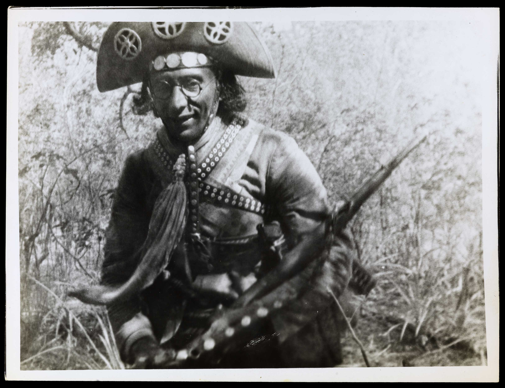
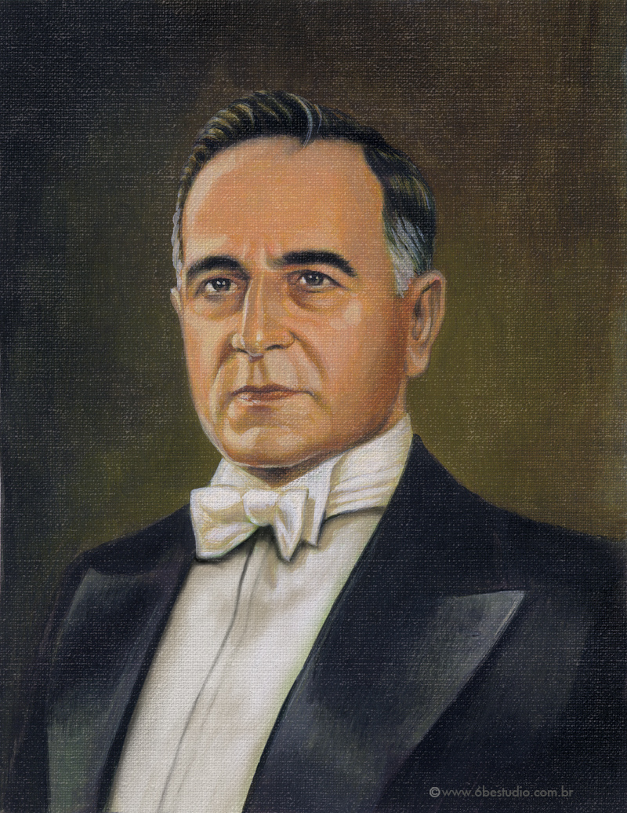
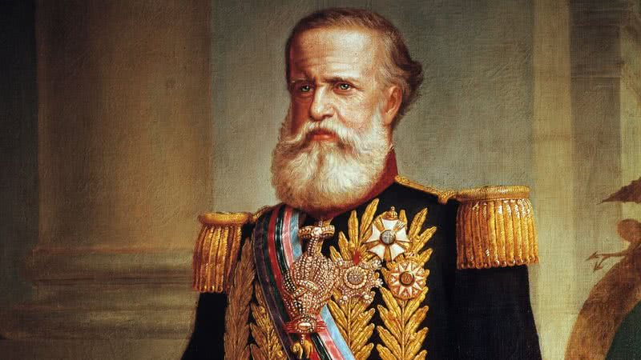
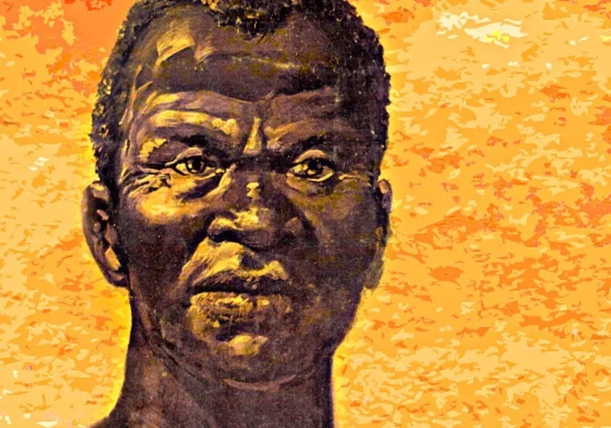
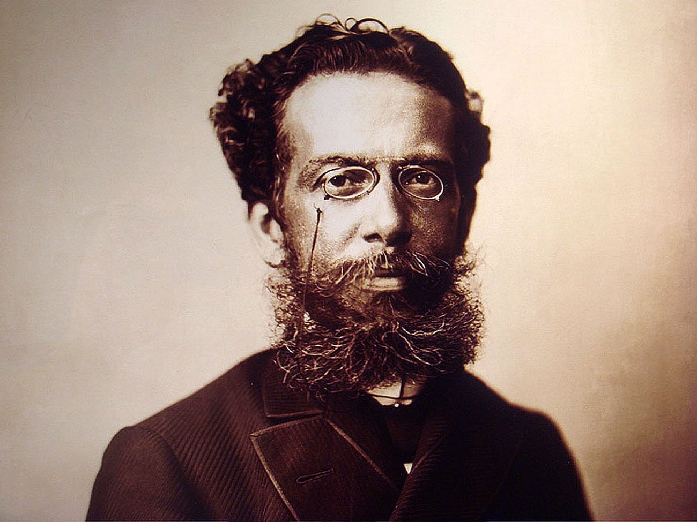
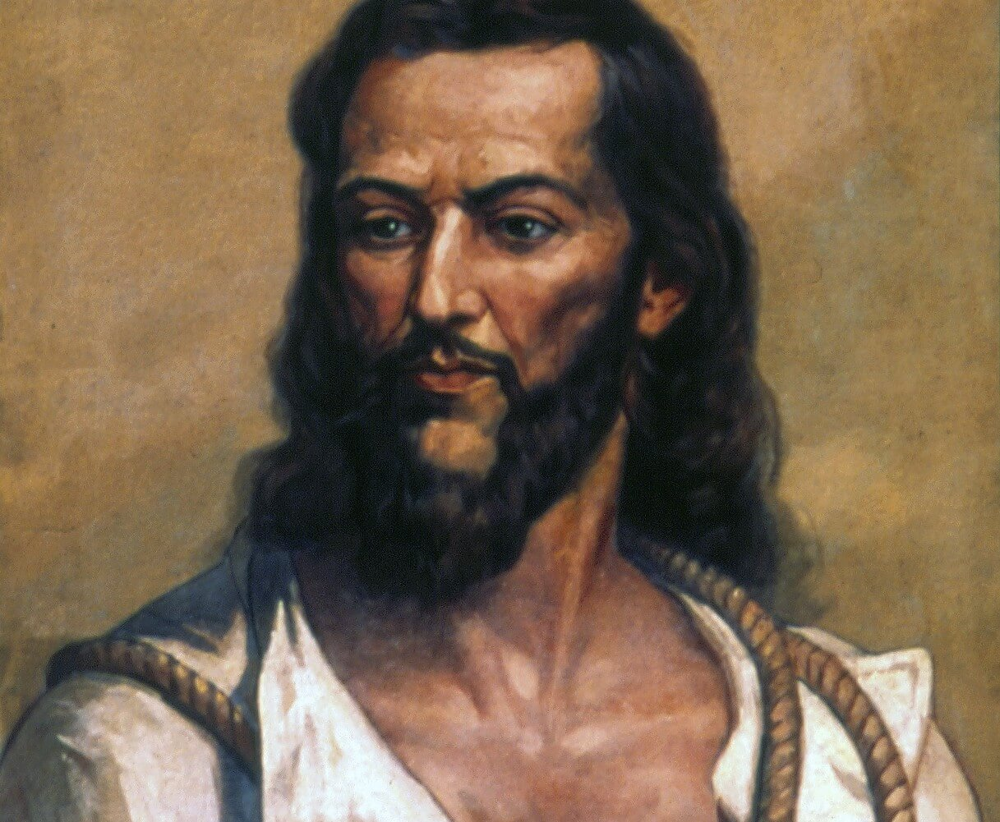
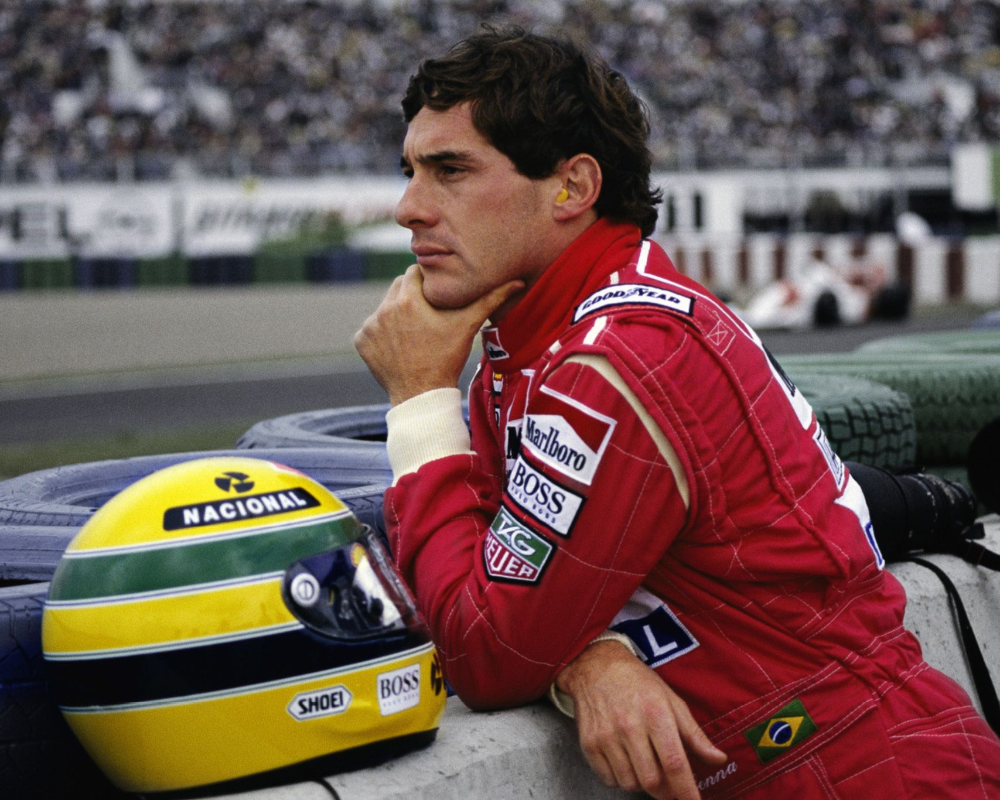
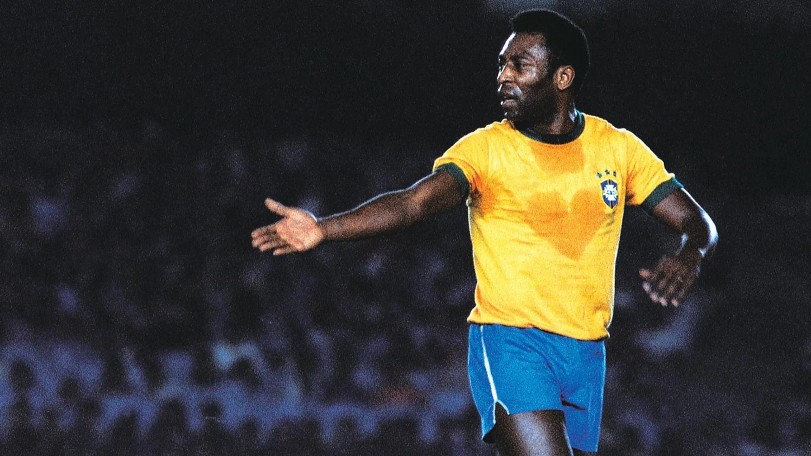

-
Lampião
Descrição
Virgulino Ferreira da Silva, mais conhecido pelo apelido Lampião, foi um cangaceiro brasileiro que atuou na região do sertão nordestino do Brasil. Nascido em 4 de junho de 1898 em Vila Bela, atual Serra Talhada, no estado de Pernambuco, Lampião liderou um grupo de cangaceiros que aterrorizou a região. Seu apelido foi dado devido à sua habilidade em manejar o rifle, que, de tanto atirar, mais parecia um candeeiro aceso nas escuras noites da caatinga.
-
Getúlio Vargas
Descrição
Getúlio Dornelles Vargas foi um militar, advogado e político brasileiro. Ele desempenhou um papel significativo na história do Brasil e é conhecido por liderar a Revolução de 1930, que encerrou a República Velha e depôs o presidente Washington Luís.
-
Dom Pedro II
Descrição
Seu reinado durou 58 anos, e ele assumiu o trono com apenas cinco anos de idade, após a abdicação abrupta de seu pai, Pedro I. Durante sua vida, Pedro II enfrentou intrigas palacianas e disputas políticas, o que moldou seu caráter e senso de dever para com o país e seu povo. Como imperador, ele liderou o Brasil em três conflitos internacionais, além de prevalecer em outras disputas internacionais e tensões domésticas. O Brasil sob seu império era uma monarquia parlamentar constitucional, distinta de seus vizinhos hispano-americanos, e emergia como uma potência internacional
-
Zumbi dos Palmares
Descrição
Zumbi dos Palmares foi um líder quilombola durante o período colonial brasileiro no século XVII. Ele se destacou por sua feroz resistência à escravidão e pela luta pela liberdade do povo negro. Zumbi criou e liderou o Quilombo dos Palmares, uma comunidade livre formada por escravos fugitivos.
-
Machado de Assis
Descrição
oi um escritor brasileiro amplamente reconhecido como o maior expoente da literatura brasileira. Sua produção literária abrangeu praticamente todos os gêneros, incluindo poesia, romance, crônica, dramaturgia, conto, folhetim, jornalismo e crítica literária.
-
Tiradentes
Descrição
Foi um dos principais nomes da Inconfidência Mineira. Esse movimento tinha como objetivo proclamar a República na capitania de Minas Gerais e emancipar a região da Coroa portuguesa. Tiradentes, além de dentista de profissão, se tornou um fervoroso defensor da causa republicana. Infelizmente, ele foi preso e, em 21 de abril de 1792, condenado à morte por enforcamento. Sua coragem e luta pela liberdade o transformaram em um herói nacional, e é por isso que celebramos o feriado de Tiradentes em sua homenagem.
-
Ayrton Senna
Descrição
Ayrton Senna foi um piloto de Fórmula 1 das décadas de 1980 e 1990, considerado o maior ídolo brasileiro do automobilismo. Nascido em São Paulo em 21 de março de 1960, ele conquistou três títulos na Fórmula 1: em 1988, 1990 e 1991. Ao longo de sua carreira, obteve 41 vitórias em 161 corridas disputadas.
-
Renato Russo

Descrição
Renato Russo, cujo nome verdadeiro era Renato Manfredini Júnior, nasceu no Rio de Janeiro em 27 de março de 1960 e faleceu na mesma cidade em 11 de outubro de 19961. Ele foi um cantor, compositor, produtor e multi-instrumentista brasileiro, amplamente conhecido por ser o líder, vocalista e fundador da banda Legião Urbana.
-
Pelé
Descrição
Edson Arantes do Nascimento, mais conhecido como Pelé, foi um futebolista brasileiro que atuou como atacante. Ele é amplamente considerado o maior atleta de todos os tempos e é descrito como o “Rei do Futebol”.